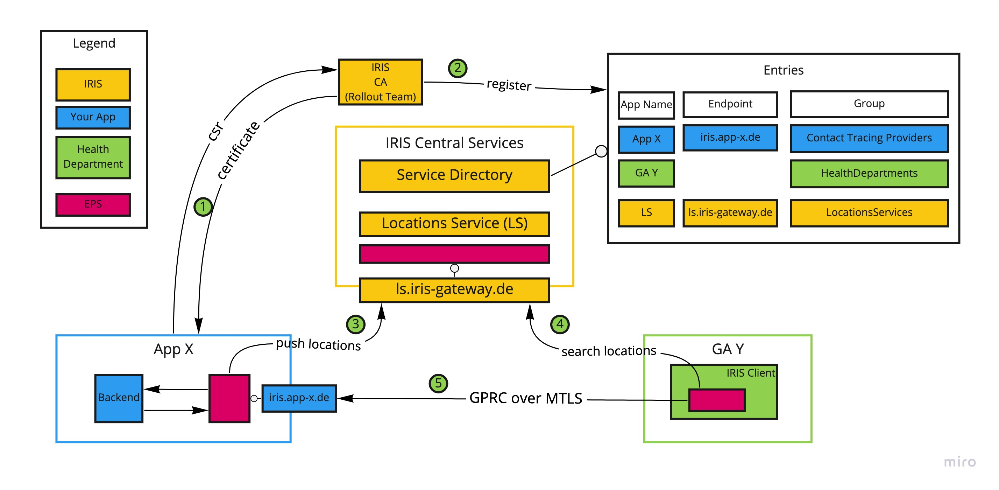
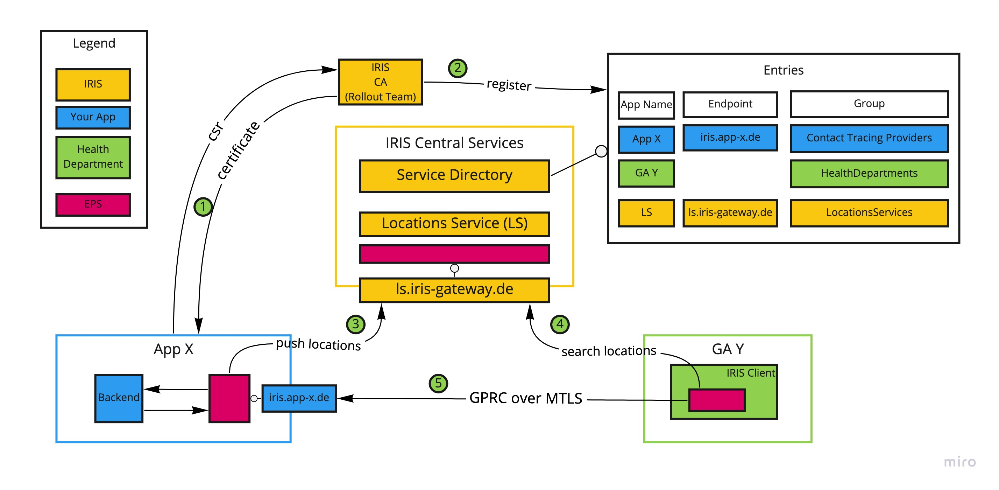

In this document we describe how apps can be connected to the
IRIS system.
Overview
The IRIS System consists of different actors that form trust
relationships with each other based on certificates. These actors
are 1) IRIS Central services 2) Contact Tracing Applications (you)
and 3) Health Departments. Actors use the IRIS endpointserver in
order to exchange messages with other actors. Each actor is
registered in the public IRIS service directory alongside with its
corresponding role on the IRIS system.
Please find below and overview of the IRIS system and its actors
as well as the flows that are relevant for your application.

|Step|Description| |-|-| |1|You need to send a certificate
signing request (csr) to the IRIS rollout team. The rollout
team will provide you with a certificate in return. You need to
configure your EPS to use that certificate.| |2|The IRIS rollout
team registers your app and the endpoint domain in the service
direcory.| |3|Your app pushes the locations for those it is
responsible for into the central locations service. This is a
frequent process and depends on the lifecycle of the locations that
are managed within by app| |4|The health authority employees can
use the IRIS client (having ints own EPS) in order to search for
locations.| |5|The IRIS client connects to your app through the EPS
layer and requests guest lists for a specific date and time. In
order to know the endpoint IRIS internally keeps a record of which
location is owned by which app. Your app returns the contact
information using EPS.|
Prerequisites
You need to open port 4444 for incoming connections.
Request a certificate
Generate your certificate signing request
Please use your app name as CN (for example CN=smartmeeting).
Don't use spaces.
O="COSYNUS GmbH"
ST="Europaplatz 5"
L="64293 Darmstadt"
C="DE"
OU="IT"
CN=[yourappname]
# using less than 1024 here will result in a TLS handshake failure in Go
# using less than 2048 will cause e.g. 'curl' to complain that the ciper is too weak
LEN="2048"
openssl genrsa -out "[yourappname].key" 2048;
openssl rsa -in "[yourappname].key" -pubout -out "[yourappname].pub";
openssl req -new -sha256 -key "[yourappname].key" -subj "/C=${C}/ST=${ST}/L=${L}/O=${O}/OU=${OU}/CN=${CN}" -addext "subjectAltName = DNS:[yourappname],DNS:*.[yourappname].local" -out "[yourappname].csr";
Send the .csr and your domain to IRIS rollout team and get your
.crt file back from us.
Install and configure EPS
The settings folder below eps-config must be copied to your own
server. The files must be adapted according to this document and
the comments in the respective files. The certificate issued by us
and the corresponding key must be stored in the certs folder.
The settings folder is then referenced in the docker call as
[your-local-settings-path] as an absolute path.
You can start a local eps with
docker run --name iris-eps --expose 5556 --expose 4444 -p 5556:5556 -p 4444:4444 -v [your-local-settings-path]:/app/settings -e EPS_SETTINGS=settings/staging/roles/[yourapp] inoeg/eps:v0.0.4 --level trace server run
[yourapp] corresponds to the app name you chose for
CN in your certificate.
Port 4444 is mandatory for staging environment. You can change
port 5556 to your needs.
Requests will then be sent to POST
https://localhost:5556/jsonrpc
| Parameter | Description | Annotations | | --- | --- | ---
|
| id | your unique location id | Identifies the
location in your system. Will be included in incoming requests |
name | location friendly name | You could also split
your clients sites here. Example: client has site "Hauptstrasse"
and "Kaiserstrasse" could be split in two locations with their own
location id. | contact | contact information | see
below
| Parameter | Description | Annotations | | --- | --- | ---
|
| providerId | your unique ProviderId | Caution: this
will change and will not be required in the future.
| Parameter | Description | Annotations | | --- | --- | ---
|
| name | Calling eps | You will use this name to reach
the endpoint for data submissions
dataRequest object:
| Parameter | Description | Annotations | | --- | --- | ---
|
| start | Start of requested time period | |
end | End of requested time period | You will use this
name to reach the endpoint for data submissions
| requestDetails | Additional message (optional) | May
contain additional information about the request
| dataAuthorizationToken | Identifies the request to
the health department | Used in submission to ensure that the data
has been requested by the HD.
| connectionAuthorizationToken | Identifies the
connection to public proxy | Will be necessary in the future to be
able to send submissions from the browser. |
locationID | Your location identifier | The identifier
you used when creating the location.
Response:
| Parameter | Value | | --- | --- |
| _ | OK |
The request can be saved and edited locally. The functions for
transmitting the data to the health authorities are next on the
roadmap.
Send data submissions
There are two ways to submit data to IRIS. The two ways result
from the two different types of data management. Apps that can
provide data unencrypted in the backend can send data directly to
IRIS via EPS from the backend. If the user data must first be
decrypted by the operator or another authority in the browser, it
can then be transmitted directly from the browser via end-to-end
encryption.
Send data from app backend
The data is sent to the custom EPS via JSON-RPC. The method name
used is [hdEndpoint].submitGuestList.
[hdEnpoint] corresponds to _client.name from the
received DataRequest.
You can find the password and access data in the slack
channel.
There you should find your pushed locations in the search when
you start a new event tracking. If you send the request, you should
receive a data request.
Changelog
[0.0.4] - 2021-05-20
Added
Submit data when accessible in backend
Changed
Docker command with new eps version
[0.0.3] - 2021-05-20
Added
Receiving data requests
Improved setup instructions
Test your implementation
[0.0.2] - 2021-05-08
Added
Overview drawing including steps and descriptions.
How to connect your App to IRIS
In this document we describe how apps can be connected to the IRIS system.
Overview
The IRIS System consists of different actors that form trust relationships with each other based on certificates. These actors are 1) IRIS Central services 2) Contact Tracing Applications (you) and 3) Health Departments. Actors use the IRIS endpointserver in order to exchange messages with other actors. Each actor is registered in the public IRIS service directory alongside with its corresponding role on the IRIS system.
Please find below and overview of the IRIS system and its actors as well as the flows that are relevant for your application.

|Step|Description| |-|-| |1|You need to send a certificate signing request (csr) to the IRIS rollout team. The rollout team will provide you with a certificate in return. You need to configure your EPS to use that certificate.| |2|The IRIS rollout team registers your app and the endpoint domain in the service direcory.| |3|Your app pushes the locations for those it is responsible for into the central locations service. This is a frequent process and depends on the lifecycle of the locations that are managed within by app| |4|The health authority employees can use the IRIS client (having ints own EPS) in order to search for locations.| |5|The IRIS client connects to your app through the EPS layer and requests guest lists for a specific date and time. In order to know the endpoint IRIS internally keeps a record of which location is owned by which app. Your app returns the contact information using EPS.|
Prerequisites
You need to open port 4444 for incoming connections.
Request a certificate
Generate your certificate signing request
Please use your app name as CN (for example CN=smartmeeting). Don't use spaces.
Send the .csr and your domain to IRIS rollout team and get your .crt file back from us.
Install and configure EPS
The settings folder below eps-config must be copied to your own server. The files must be adapted according to this document and the comments in the respective files. The certificate issued by us and the corresponding key must be stored in the certs folder.
The settings folder is then referenced in the docker call as
[your-local-settings-path]as an absolute path.You can start a local eps with
[yourapp]corresponds to the app name you chose for CN in your certificate.Port 4444 is mandatory for staging environment. You can change port 5556 to your needs.
Requests will then be sent to
POST https://localhost:5556/jsonrpcInteracting with EPS
Sending messages
Sending messages to IRIS is done with JSON-RPC.
You can find the specification of the respective methods and destinations here.
Destinations and methods
Location search index
Location search index can be reached at
ls-1.Possible methods and their structure are
postLocationsToSearchIndex
Request
Example parameters:
| Parameter | Description | Annotations | | --- | --- | --- |
|
locations| array of locations |Location parameters:
| Parameter | Description | Annotations | | --- | --- | --- |
|
id| your unique location id | Identifies the location in your system. Will be included in incoming requests |name| location friendly name | You could also split your clients sites here. Example: client has site "Hauptstrasse" and "Kaiserstrasse" could be split in two locations with their own location id. |contact| contact information | see belowContact parameters:
| Parameter | Description | Annotations | | --- | --- | --- |
|
officialName| locations official name ||
representative| locations representative | |email| email | |phone| phone numberResponse
OKif successful. Errormessages to be done.getProviderLocations
Example parameters:
| Parameter | Description | Annotations | | --- | --- | --- |
|
providerId| your unique ProviderId | Caution: this will change and will not be required in the future.Response
Array of
idandnamepairs, where id is your unique identfier andnamethe locations friendly name. Errormessages to be done.deleteLocationFromSearchIndex
Example parameters:
| Parameter | Description | Annotations | | --- | --- | --- |
|
locationId| your internal location identifier | |Response
OKif successful.NOT FOUNDif location did not exist. Errormessages to be done.Process IRIS Client data requests
You need to provide a json-rpc endpoint on your server. The exact endpoint can be configured in your EPS configuration file.
To receive incoming DataRequests, you need to implement a method
createDataRequeston your Endpoint.The method has to accept the following paramters:
createDataRequest parameters:
| Parameter | Description | Annotations | | --- | --- | --- |
|
_client| Calling EPS details ||
dataRequest| DataRequest details |_client object:
| Parameter | Description | Annotations | | --- | --- | --- |
|
name| Calling eps | You will use this name to reach the endpoint for data submissionsdataRequest object:
| Parameter | Description | Annotations | | --- | --- | --- |
|
start| Start of requested time period | |end| End of requested time period | You will use this name to reach the endpoint for data submissions|
requestDetails| Additional message (optional) | May contain additional information about the request|
dataAuthorizationToken| Identifies the request to the health department | Used in submission to ensure that the data has been requested by the HD.|
connectionAuthorizationToken| Identifies the connection to public proxy | Will be necessary in the future to be able to send submissions from the browser. |locationID| Your location identifier | The identifier you used when creating the location.Response:
| Parameter | Value | | --- | --- |
|
_|OK|The request can be saved and edited locally. The functions for transmitting the data to the health authorities are next on the roadmap.
Send data submissions
There are two ways to submit data to IRIS. The two ways result from the two different types of data management. Apps that can provide data unencrypted in the backend can send data directly to IRIS via EPS from the backend. If the user data must first be decrypted by the operator or another authority in the browser, it can then be transmitted directly from the browser via end-to-end encryption.
Send data from app backend
The data is sent to the custom EPS via JSON-RPC. The method name used is
[hdEndpoint].submitGuestList.[hdEnpoint]corresponds to _client.name from the received DataRequest.Parameters:
| Parameter | Description | Annotations | | --- | --- | --- |
|
requestId| Authorizes data submission | Equals the dataAuthorizationToken from DataRequest. CAUTION: will be renamed soon.|
guestList| Guest list |Guest object:
| Parameter | Description | Required | Annotations | | --- | --- | --- | --- |
|
firstName| First name | true ||
lastName| Last list | true | |sex| Sex | false |[ MALE, FEMALE, OTHER, UNKNOWN ]|email| E-Mail | false | |phone| Phone number | false | |mobilePhone| Mobile number | false | |address| Address object | false | |attendanceInformation| Attendance object | true |Address object:
| Parameter | Description | Required | Annotations | | --- | --- | --- | --- |
|
street| Street | false ||
houseNumber| House number | false | |zipCode| Zip code | false | |city| City | false |AttendanceInformation object:
| Parameter | Description | Required | Annotations | | --- | --- | --- | --- |
|
attendFrom| Attend from | true ||
attendTo| Attend to | true | |additionalInformation| Additional attendance information | false | For example table or areaTest your implementation
To test your implementation, visit https://iris.staging.iris-gateway.de:9443
You can find the password and access data in the slack channel.
There you should find your pushed locations in the search when you start a new event tracking. If you send the request, you should receive a data request.
Changelog
[0.0.4] - 2021-05-20
Added
Changed
[0.0.3] - 2021-05-20
Added
[0.0.2] - 2021-05-08
Added
[0.0.1] - 2021-05-04
Added